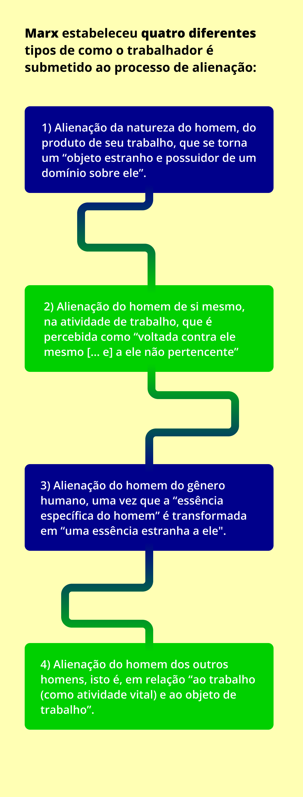

E o que é o trabalho alienado em Marx?
Título: Qual é a definição de capitalismo?
Fonte: Prosa (2024).
Elaboração: Prosa (2024).
A divisão social do trabalho estabelece a divisão da sociedade em classes sociais e, por sua vez, divide os trabalhadores em manuais e intelectuais, ambos com sua unilateralidade e dependência ao detentor dos meios de produção.
Assim, o trabalho de livre manifestação da vida e gerador de prazer, sob as condições da propriedade privada capitalista, torna-se alienação: o produto gerado torna-se externo e estranho ao trabalhador (por conta da organização parcelada do processo de produção), pois surge fora do seu domínio e controle e é submetido a um mercado regido por leis, que também estão fora do alcance daquele que o produziu.
A exteriorização do trabalhador em seu produto tem o significado não somente de que seu trabalho se torna um objeto, uma existência externa, mas, bem além disso [que se torna uma existência] que existe fora dele, independente dele e estranha a ele, tornando-se uma potência autônoma diante dele, que a vida que ele concedeu ao objeto se lhe defronta hostil e estranha.
Essa definição mais geral do processo de alienação, segundo Marx, também se estende a todos os indivíduos no que tange à sua essência humana, às suas relações interpessoais e ao seu potencial criativo.

Título: Processo de alienação do trabalhador
Fonte: Marx (1976 [1844]).
Elaboração: Prosa (2024r).
Por outro lado, se o produto não pertence ao trabalhador, ele se destina a outro homem que não o trabalhador. Se a atividade laboral é um sacrifício para o trabalhador, ela deve ser fonte de satisfação de outro homem, o capitalista, que, para o trabalhador, é tão hostil e estranho quanto o próprio produto. Vejamos abaixo os tipos de alienação em Marx (1976 [1844]):
.png)
Título: Tipos de alienação
Fonte: Marx (1976 [1844]).
Elaboração: Prosa (2024s).
Os processos que envolvem o trabalho alienado são estabelecidos pela economia política como condições naturais e imutáveis da sociedade. Segundo Marx, sob a análise de Musto (2023, p. 18):
Longe de ser uma condição constante da objetivação, da produção do trabalhador, o trabalho alienado é, para Marx, pelo contrário, a expressão da socialidade do trabalho dentro dos limites da ordem atual, da divisão do trabalho que considera o homem "um aparelho, uma ferramenta (...) e o transforma em um aborto espiritual e físico". (Tradução nossa).
Marx, contudo, acreditava que as bases para uma sociedade mais avançada estão postas no capitalismo e que a humanidade pode prosseguir, então, no caminho do desenvolvimento social – mas por meio de um novo modo de produção, constituído por uma "associação de homens livres que trabalham com meios de produção coletivos e que, conscientemente, despendem suas forças de trabalho individuais como uma única força social de trabalho” (Marx, 2013, p. 214).
De acordo com os escritos de Marx em Manuscritos Econômico-Filosóficos e depois n’O capital – Livro III, citado em Musto (2014, p. 90):
[...] de fato, o reino da liberdade começa somente quando cessa o trabalho determinado pela necessidade e pela finalidade externa; se encontra portanto, por sua natureza, além da esfera da verdadeira e própria produção material. Como o selvagem deve lutar com a natureza para satisfazer as suas necessidades, para conservar e para reproduzir a sua vida, assim deve fazer também o homem civil, deve fazê-lo em todas as formas da sociedade e sob todos os possíveis modos de produção. Na medida em que ele se desenvolve, o reino das necessidades naturais se expande, porque se expandem as suas necessidades, mas ao mesmo tempo se expandem as forças produtivas que satisfazem estas necessidades. A liberdade neste campo somente pode consistir nisto: que o homem socializado, isto é, os produtores associados, regulam racionalmente este seu intercâmbio orgânico com a natureza, conduzindo-o sob seu controle comum, ao contrário de serem por ele dominados como uma força cega; que eles executam a sua tarefa com o menor emprego possível de energia e nas condições mais adequadas à sua natureza humana e mais dignas dela.
Em conclusão, Musto (2014, p. 90) propõe a atualização da proposição marxiana sobre uma nova sociedade:
Esta produção de caráter social, juntamente com os progressos tecnológicos e científicos e a consequente redução da jornada de trabalho, cria as possibilidades para o nascimento de uma nova formação social, na qual o trabalho coercitivo e alienado, imposto pelo capital e subsumido pelas suas leis, é progressivamente substituído por uma atividade criativa e consciente, não imposta pela necessidade; e na qual as relações sociais tomam o lugar da troca indiferente e acidental em função das mercadorias e do dinheiro. Não é mais o reino da liberdade do capital, mas aquele da autêntica liberdade humana do indivíduo social.
Como práxis social, cuja importância é crucial para o desenvolvimento humano e social, a educação precisa estar atenta e acompanhar esse processo de potencialidades transformadoras.
O trabalho é elemento imprescindível à formação humana, e suas virtualidades emancipatórias se fortalecem com o concurso da educação politécnica, no qual se conjugam a formação intelectual e física e as dimensões teórico-práticas do conhecimento e da atividade humana. É nesse sentido que se recorre à referência da categoria práxis para discorrer, a seguir, sobre o que se entende do lugar da EPT efetivamente comprometida com a superação da alienação humana e com a transformação social.